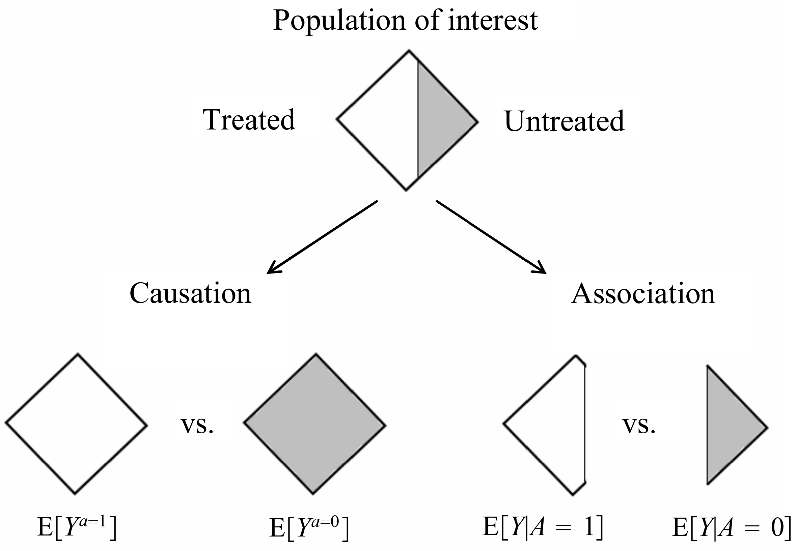

Causal Inference: Introduction
© 2020 Anton Lebedevich
Outline
- Stories when supervised learning is not enough.
- Difference between causation and association.
- What to do if you only have historical data.
- Causal diagrams.
- Methods.
- Warnings.
- Where to go next.
Anton Lebedevich
- data science engineer, independent contractor
- background in backend performance optimization
- loves time series and anomalies
- worked on spam detection, marketing campaign optimization, demand forecasting
- blogs at mabrek.github.io
Story: Dog's Tail
Photo by Chris Arthur-Collins on Unsplash
ML problem: make a dog friendly
Photo by Jana Sabeth on Unsplash
Dogs Dataset
| breed | size | tail wagging | … | friendly |
|---|---|---|---|---|
| pug | small | yes | yes | |
| doberman | big | yes | yes | |
| chihuahua | small | no | no | |
| … |
tail wagging → friendliness
you decided to wag his tail
By Roberto Ferrari from Campogalliano (Modena), Italy - Dog, CC BY-SA 2.0, Link
YOU DIED
Story: Sales Before Weekend

Product Weekly Sales

ML Problem: Optimize Replenishment
{kind=link}
- Usually truck arrives on Monday noon.
- Model predicts low sales on Fri-Sun despite having some items in stock.
- You decide to send one truck on Monday evening.
- …
- NO PROFIT, Monday sales dropped.
- The product expires in one week,
customers don't want to stockpile soon to be expired product for weekend
better to send two trucks

typical ML introduction courses be like:
Problem → ML → Solution

Causation
There is something that you can't figure out from historical data alone.
You need to have domain knowledge or run experiments.
Kids learn that hard way (have you tried to wag dog's tail?)
Causal questions
- Estimating the treatment effect on a population.
- Which treatment to choose for a patient?
- How many items will be sold if we set price to X?
- How much money your model deployment could bring?
- Does X cause Y?
- What if …?
And the most important question:
Will this dog be happy if we pet it?
It's not a Typical Supervised ML Problem
Correlation does not imply causation
inability to legitimately deduce a cause-and-effect relationship
between two variables solely on the basis of
an observed association or correlation between them
en.wikipedia.org/wiki/Correlation_does_not_imply_causation
supervised ml models learn association (correlation) not causation (effect of intervention)

Causation vs Association
source Hernán MA, Robins JM (2020). Causal Inference: What If. Boca Raton: Chapman & Hall/CRC.
|
AB-tests (Randomised Controlled Trials)
|
|
|
Observational Studies
|
|
AB-tests (Randomised Controlled Trials)
|
|
|
Observational Studies
|
Observational Studies
Use it only if you can't run randomized experiment:
- you have to make assumptions
- requires exchangeability, positivity, consistency
- breaks under unmeasured confounding
Exchangeability
The conditional probability of receiving every value of treatment, though not decided by the investigators, depends only on measured covariates
Positivity
The probability of receiving every value of treatment conditional on covariates is positive.
Consistency
The values of treatment under comparison correspond to well-defined interventions that, in turn, correspond to the versions of treatment in the datastory: being fit by genes and exercising vs. being obese and forced to diet and exercise
Causal Diagrams
story: critically ill patients
Conditioned Confounding
story: critically ill patients
Selection Bias
story: healthy worker

Complicated Bias (M-bias)

source Hernán MA, Robins JM (2020). Causal Inference: What If. Boca Raton: Chapman & Hall/CRC.
Complicated Bias with Conditioning

source Hernán MA, Robins JM (2020). Causal Inference: What If. Boca Raton: Chapman & Hall/CRC.
Methods
- Stratification
- Propensity scores (many ways to use)
- Outcome regression (is my profession)
- … to be continued, active research
Moar Layers and Moar Data Myth
- Adding features could add more bias (from variable selection What If Book).
- More data doesn't mean that extra data is unbiased.
- ML model could throw away your treatment variable.
- Confounders are correlated with causes, incorrect feature importance.
- Regression coefficients are unstable for correlated features.
- Still can't find causation, only association.
Do Observational Studies Work?
Success:
- "Do observational studies using propensity score methods agree with randomized trials? A systematic comparison of studies on acute coronary syndromes" Dahabreh et al. 2012
- "Can We Trust Observational Studies Using Propensity Scores in the Critical Care Literature? A Systematic Comparison With Randomized Clinical Trials" Kitsios et al. 2015
- "Healthcare outcomes assessed with observational study designs compared with those assessed in randomized trials" Anglemeyer et al. 2014
Failure:
Links
- Hernán MA, Robins JM (2020). Causal Inference: What If. Boca Raton: Chapman & Hall/CRC
- "An introduction to g methods" Ashley I Naimi et al. 2017
- "Causal inference in statistics: An overview" Judea Pearl
- causalinference.gitlab.io/kdd-tutorial/
- Causal Inference Seminar - Peter Tennant
- "Causal Inference in Online Systems" tutorial by Amit Sharma at IC2S2
In Conclusion
- You can't simply run fit/predict to answer 'What If' question.
- There are many ways to get incorrect answers.
- You can get better answers it you take causality into account.
Contacts
Anton Lebedevich
mabrek@gmail.com
@mabrek